머스켓 소총의 경제학
게시: 2018-06-07T06:30:00+09:00
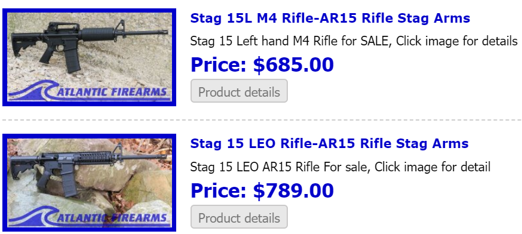
요즘 미국에서 무차별 총격 사건이 일어날 때마다 등장하는 AR15 소총, 즉 M4 소총의 민수용 반자동 버전 가격을 찾아보니 대략 600~700불 정도 합니다. 우리 돈으로 약 60~70만원 하는 셈이지요. 비싸게 느껴지시나요 ? 최저임금으로 일할 때 대략 12일 정도를 일해야 벌 수 있는 돈이니 엄청나게 비싸다고 할 수는 없을 것입니다. 110kg짜리 어른 돼지 1마리의 가격이 대략 45만원 정도한다니까, 돼지 1.5마리 정도의 가격입니다. 하지만 원래 무기라는 것은 이 정도보다는 훨씬 비싼 물건이었습니다. 적어도 산업 혁명 이전까지는 말이지요. 일리아드(Illiad)에서 트로이의 편을 든 전쟁의 신 아레스가 그리스군 장수를 때려죽인 뒤 하는 일이 쓰러진 적의 갑옷과 투구를 벗겨 빼앗는 것이었습니다. 비싼 전리품이거든요. 중세 시절까지도 전투가 끝난 전쟁터는 값비싼 전리품으로 가득찬 보물밭이나 다름없었습니다. 생산력이 한심한 수준이던 시절에는 갑옷과 검, 투구 등의 무기는 물론이고 그 밑에 입는 평범한 덧옷과 장화 등이 모두 팔 수 있는 상품이었습니다.
그렇다면 산업혁명이 막 일어나던 시점인 나폴레옹 전쟁 당시의 일반 머스켓 소총 가격은 어땠을까요 ?
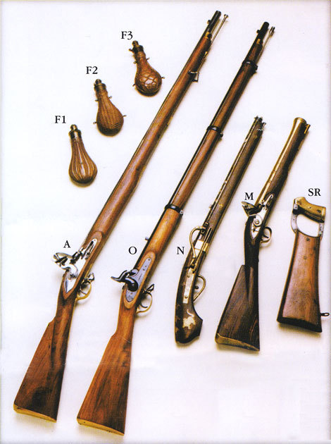
(제 눈엔 무척 비싸 보입니다만....)
여기 영수증이 하나 있습니다. 1814년, 미국 필라델피아에서 3정의 머스켓 소총을 조셉 헨리( Joseph Henry)라는 업자로부터 도시(Dr. Dorsey)와 그라프(Mr. Graff)라는 양반들(어쩌면 Dr. Dorsey & Mr. Graff가 사람이 아니라 가게 이름일지도...)이 사들이면서 받은 영수증입니다. 여기에는 부품을 완전히 다 갖춘 머스켓 3정의 가격이 한정에 15달러, 총 45달러라고 되어 있습니다.
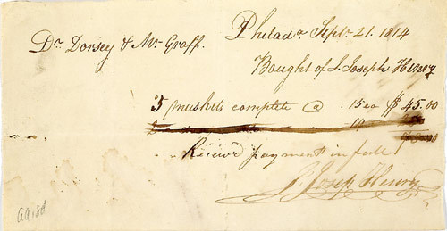
(맙소사... 경매에 나온 이 영수증 가격이 무려 450달러입니다. 여러분도 영수증 챙겨뒀다 후손에게 물려주시길...)
1814년 기준이니까, 당연히 15달러라는 가격은 지금의 15달러, 즉 1만8천원은 아닐 겁니다. 이리저리 검색해보니, 필라델피아가 위치한 지역인 펜실베니아 주에서는, 당시 1달러의 가치가 영국돈 90펜스, 즉 7실링 6펜스(1실링=12펜스) 였다고 하네요. 전에 한번 계산해드렸듯이, 당시 영국돈 1실링으로는 금을 0.31g 정도 살 수 있었습니다. 금의 가치는 불변이라고 가정하면, 당시 영국돈 1실링은 현재 우리나라 원화로는 (1g의 금에 4만2천원라고 하면) 약 1만3천원 정도가 됩니다.
자, 다시 계산하면, 1814년 미국에서 머스켓 1정을 사는데는 15달러가 들었고, 이를 당시 영국돈으로 계산하면 1350펜스 (112실링 6펜스)이며, 다시 현재의 우리나라 원화로 계산하면 약 146만2천5백원이 됩니다. 현재의 AR15 소총과 비슷할 때 약 2배 이상의 차이가 나는군요. 그렇지만 이런 가격 해석은 꼭 옳은 것은 아닙니다. 지금 146만원이야 소득 수준 대비 그렇게까지 큰 돈은 아닙니다만, 당시 영국에서는 숙련공 하루 일당이 4실링에 불과했고, 빵 4파운드짜리 덩어리 하나에 6 펜스 정도의 가격이었기 때문에, 머스켓 한정에 112.5 실링이라면 어지간한 가정의 1달 소득에 해당하는 큰 돈이었습니다.
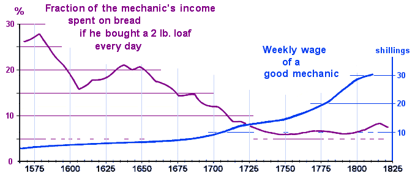
(지난번 posting에서 보신 그래프입니다. 원본은 http://www.johnhearfield.com/History/Breadt.htm )
게다가, 이런 가격은 영국이나 미국의 공업화된 지역에서나 통용되던 가격이었습니다. 머스켓 소총이 바다넘고 산을 건너 당시 유럽 문명이 미치지 않은 곳에 도착할 때면 그 가격은 훨씬 비싸졌겠지요. 하기사 당시의 목조 범선으로 화물을 수송하려면 그 수송비며 보험료 등만 해도 엄청났을 것입니다. 이런 예를 보여주는 장소가 있습니다. 남태평양 피지 군도에 속해있는 마마누카(Mamanuka) 섬에는 머스켓 만(Musket Cove)라는 멋진 해안이 있습니다. 이 곳에 이런 이름이 붙은 것은 이 땅의 원주민이, 유럽인에게 실제로 머스켓 소총 한자루를 받고 이 해변가를 팔았기 때문이라고 합니다. 그 원주민은 이웃한 다른 원주민과 싸우기 위해 총이 필요했다고 하네요. 참고로 지금은 이 해변가는 어떤 돈많은 호주인 사업가의 소유지라고 합니다.
(피지의 머스켓 코브... 총 한 자루와 맞바꾼 경치입니다.)
만약 저 피지섬 원주민이 이웃 주민과 사이가 나쁘지 않았다면 어땠을까요 ? 뭐 햇빛 쬐고 쉬는 것 이외에는 별로 쓸모 없는 땅이긴 하지만, 그래도 부동산을 이상한 천둥 막대기 한개를 받고 팔아넘겼을까요 ? 글쎄요, 그건 잘 모르겠습니다만, 확실히 모든 상품의 가치는 그 수요에 따라서 변하는 것이 당연합니다. 머스켓 소총의 가격도 전쟁이나 분쟁이 일어날 경우 높아졌고, 평화로운 시기에는 떨어졌습니다.
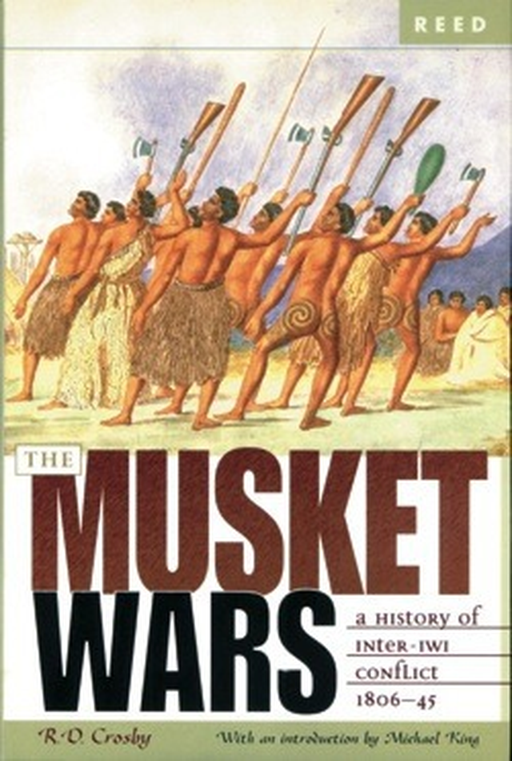
(뉴질랜드의 마오리족은 혓바닥 길게 내빼는 재주만 있는 것이 아니었습니다. 그들은 영국인들을 당혹케 할 정도의 육체적 강인함과 호전성을 띤 용맹한 부족이었습니다.)
뉴질랜드의 용감하고 호전적인 마오리족도 유럽인들과 접하면서 머스켓 소총의 위력에 일찍 눈을 떴습니다. 이들도 머스켓 소총을 구입하기 위해서 애를 많이 썼는데, 이들은 백인들에게 주로 감자와 돼지를 팔고 머스켓 소총을 얻었습니다. 원래 마오리족의 주식은 쿠마라(kumara)라는 일종의 고구마였는데, 유럽인들이 전해준 감자가 훨씬 재배에 쉬웠고 재배량도 많았기 때문에, '용감하고 호전적인' 마오리족 남자들이 농사일에서 해방되는 결과를 낳았습니다. 즉, 이들은 노예들에게 경작을 시키고 자신들은 다른 노예를 잡으러 나가는 것이 더 수지맞는 장사였던 것이지요. 그런데 노예를 잡자면 머스켓 소총이 필요했습니다. 그러자면 감자를 더 많이 키워야 했고, 그러자면 더 많은 노예들이 필요하게 되는, 일종의 악순환이 반복되었던 것이지요. 이로 인해 발생한 약 500회 정도의 분쟁을 뉴질랜드 역사에서는 '머스켓 전쟁' (일부에서는 '감자 전쟁')이라고 부릅니다. 이 전쟁은 1818년~1820년대 초반까지 계속 되었는데요, 이 기간 동안 머스켓 소총의 수요가 폭발하면서 그 가격도 껑충 뛰었습니다. 아래 그림을 보시지요. 머스켓 전쟁 직전에는 돼지 8 마리 또는 감자 150 바구니에 살 수 있던 머스켓 소총 가격이 전쟁이 격화되면서 3배 넘게 뛰었다가, 결국 다시 원래 가격을 되찾습니다.
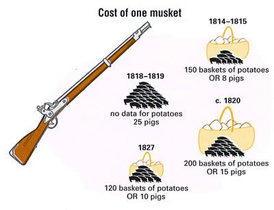
(AR15 소총 한 정 가격이 돼지 1.5마리 정도라는 거, 이 그림을 보면 대단히 저렴한 가격입니다...)
마오리족 뿐만 아니라 나폴레옹도 머스켓 소총을 충분히 공급받지 못해 골치를 썩혔습니다. 나폴레옹은 자칭 100만이라는 그랑다르메(Grand Armee)를 충분히 무장, 재보급하기 위해서는 적어도 3백만 정의 머스켓 비축분이 있어야 한다고 생각했습니다만, 이는 결코 실현되지 못했습니다. 러시아를 침공할 때도 70만 수준이었던 그의 군대를 위해 필요한 머스켓 소총 숫자가 3백만 정이라는 것은 확실히 너무 지나친 감이 있다고 생각이 됩니다만, 당시 현실적으로 나폴레옹은 식량 뿐만 아니라 병사들의 개인 화기 면에서도 병참이 많이 부족했었습니다. 그의 군대가 가장 절정의 컨디션을 자랑했던 1805년 아우스테를리츠 전투 직전에도, 제1선 부대들은 물론 완전한 무장을 갖추고 있었으나, 프랑스 국내의 예비대들은 제대로 된 무장을 갖추고 있지 못했습니다. 게다가 제1선 부대들도, 전투를 거치면서 계속 무기를 상실했습니다. 소위 말해서 전투 손실이 발생했던 것이지요. 그나마 압도적으로 승전했다고 하는 아우스테를리츠 전투에서만도 무려 1만2천정의 머스켓 소총이 파손되거나 분실되어, 새로 보충을 해야 했습니다.
이런 기본 화기 부족은 적국, 그러니까 프러시아나 오스트리아의 무기고를 점령하고 압수함으로써 어느 정도 해결할 수 있었습니다. 실제로 나폴레옹은 이들 국가로부터 노획한 대포들로 보병대대에도 자체 포병대를 신설하기도 했습니다. 하지만 1808년부터 시작된 스페인 전쟁은 그야말로 군수품의 블랙홀로 작용했습니다. 병력 뿐만 아니라, 무수한 군수물자가 피레네 산맥을 넘어 스페인과 포르투갈에 투입되었고, 거기서 아무 소득 없이 스러져 버렸습니다. 그로 인해 1809년 전쟁성 장관인 클라르크(Clarke)에게 1810년 7월 초까지 20만 정의 머스켓을 신규로 장만하도록 명령을 내려야 했습니다. 하지만 당시 산업 능력으로, 1년도 안되어 20만 정이라는 머스켓 생산량을 맞출 수는 없었지요.
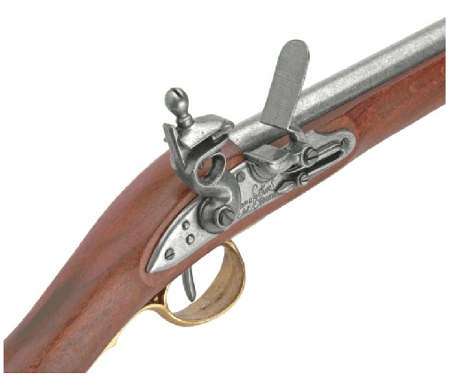
(18세기 초기부터 프랑스 육군의 표준 소총이자 미국 독립전쟁 당시 미군들에게 대량으로 보급되었던 머스켓의 걸작, 샤를르빌르(Charleville) 머스켓)
이런 군수품 부족은 1812년 러시아 원정의 참담한 실패로 파국을 맞이합니다. 나폴레옹은 라이프치히 전투에서 거의 20만 명의 병력을 동원했는데, 이때 긁어모은 신병들에게 쥐어준 머스켓 소총은 프랑스 육군의 표준 지급품인 0.69 인치 구경의 샤를르빌르(Charleville) 머스켓 소총이 아니라 급히 긁어모은 온갖 비표준 구경의 독일제 및 민간용, 구식 머스켓 소총들이었습니다. 특히, 라이프치히 전투에서 패배한 이후, 전선이 프랑스 국내로 급격히 후퇴하는 바람에, 주요 보급창이었던 비스툴라(Vistula) 및 엘베(Elbe) 강가의 요새들을 상실했고, 그 결과 더더욱 무기 보급 사정이 열악해졌습니다.
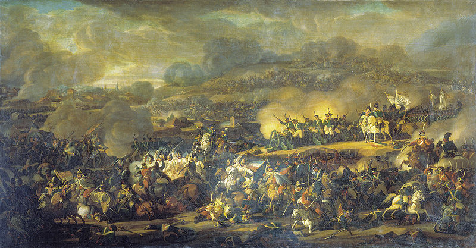
(나폴레옹의 패망을 사실상 결정지은 당대 최고 규모의 대전투, 라이프치히 전투)
1813년 11월, 나폴레옹은 프랑스 국내 방어전을 위해 의회에 새로 30만 명의 신병을 요청했지만 (물론 이 정도의 병력은 결코 모을 수 없었습니다), 그의 무기고는 거의 텅 비어있어 이들에게 쥐여줄 머스켓 소총이 절대적으로 부족했습니다. 당시 상황이 어느 정도였냐 하면, 전쟁성 장관인 클라르크에세 보낸 편지에서, 나폴레옹은 프랑스 포병대가 (별 쓸모도 없이) 많이 보유하고 있던 창(pike)을 회수하여 파리 인근의 민병대에게 나누어 주라고 명령을 내릴 정도였습니다. 어쩔 수 없었던 나폴레옹은 1813년 11월, 마침내 모든 독일 및 이탈리아 동맹국 병사들의 무장 해제를 지시하게 됩니다. 이 믿을 수 없는 외국 병사들의 손에서 무기를 빼앗아, 좀 더 믿을 수 있는 프랑스인 신병들을 무장시키자는 것이었지요. 다만, 이때 폴란드군은 무장 해제에서 제외시켰습니다. 폴란드인들의 충성심 (또는 러시아와 오스트리아에 대한 증오심)은 믿을만 했었던 것이지요.
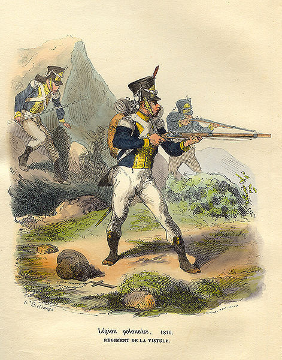
(우리 폴란드인들은 우리의 생명과 잃어버린 조국 폴란드의 운명을 나폴레옹에게 걸었다 !)
나폴레옹 전쟁 당시, 병사들은 언제나 약탈을 했습니다. 적의 도시나 마을을 점령했을 때는 물론, 전투가 끝난 뒤 쓰러진 적군 병사들의 시체가 주요 약탈 대상이었지요. (때로는 쓰러진 아군 병사들도 약탈의 대상이었습니다.) 가장 인기있는 품목은 물론 금화나 은화같은 돈이었고, 그 외에는 적의 장교들이 가진 권총이나 검이 인기 품목이었습니다. 그에 비해서, 적의 머스켓 소총은 전혀 인기 품목이 아니었습니다. 일단 수요와 공급의 원칙에 따라, 전투가 끝난 자리에는 수많은 머스켓 소총이 널려 있었으니까, 당연히 공급 과잉으로 값어치가 별로 없었지요. 그 외에도, 머스켓 소총은 무거운 것에 비해, 위에서 보았듯이 별로 비싼 물건이 아니었기 때문이지요. 한정에 6파운드도 하지 않는 머스켓 소총에 비해, 장교들의 검은 무척이나 인기가 있었습니다. 전에 인용했던 글이지만 다시 한번 보시지요.
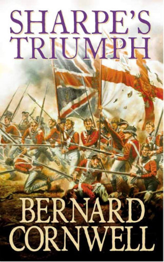
Sharpe's Triumph by Bernard Cornwell (배경: 1803년, 인도) -------------------------
"장교가 되는데는 2가지 방법이 있다네, 샤프." 맥캔들리스 대령이 말했다.
"첫번째 방법은 장교직을 돈주고 살 수 있지. 소위 계급의 가격은 400파운드야. 하지만 소위로서 복장과 장비를 갖추는데 또 150파운드가 들지. 하지만 그 정도 돈으로는 겨우 쓸만한 말과 4기니짜리 검, 그리고 중고품 제복을 살 수 있을 뿐이야. 게다가 장교 식당의 식대를 대려면 따로 사적인 수입이 있어야 하네. 소위의 연봉은 약 95파운드 정도인데, 거기서 비용으로 일부를 떼가고 소득세라는 명목으로 더 많이 얼마를 떼가지. 자네 소득세라고 들어보았나, 샤프 ?"
--------------------------------------------------------------------------------------------
저 위에 나오는 품목은 장교가 되기 위해 갖추어야 하는 최소한의 물품 목록입니다. 즉 싸구려 검일지라도, 장교가 들고 다닐만 한 검은 최소 4기니 (4기니는 84실링 = 약 100만원) 정도는 한다는 것이지요. 물론 돈 많은 장교가 들고다니는 명검은 몇백 기니짜리였습니다.
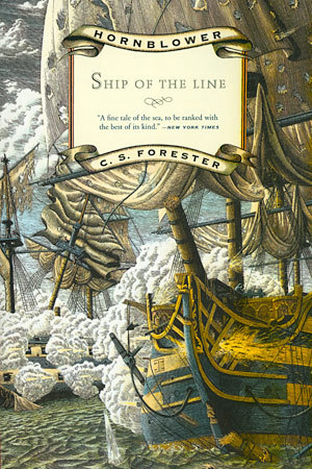
A Ship of the Line by C.S. Forester (배경: 1810년, 영국) -------------------------------
(혼블로워는 자신이 짝사랑하는 유부녀 바바라와 그 남편이자 자기 상관인 레이튼 제독의 저녁 식사 초대를 받고 몸단장에 신경을 쓰지만 가난한 자신의 처지에 좌절합니다.)
혼블로워의 구두 버클은 금이 아닌 그저 모조품으로써, 다른 사람들이 신고 올 진짜 금으로 된 버클과 대조되어 자신의 버클이 놋쇠로 된 것이라는 것이 두드러져 보일까 봐 걱정이 되었다. 그가 이 물건을 살 때는 금전 사정이 안 좋을 때였고, 감히 금으로 된 구두 버클에 20기니를 쓸 엄두를 낼 수가 없었다. 그는 자신의 구두 쪽에 이목을 끌 만한 어떤 행동도 해서는 안되겠다고 다짐을 했다. 애국자 기금이 자신이 나티비다드 호를 격침한 공로를 인정하여 그에게 수여하기로 한 100기니 짜리 검이 아직 오지 않은 것이 무척이나 아쉬웠다. 그는 그가 아직 중위 계급이었을 때 카스틸라 호를 나포한 공로로 그에게 수여되었던 50기니 짜리 검을 차고 가야 했다.
---------------------------------------------------------------------------------------------
이렇게 검이라는 것은, 머스켓보다도 위력은 약했을지 몰라도 훨씬 더 비싼 물건이었습니다. 따라서 병사들에게 약탈품으로서 아주 인기가 높았던 것이지요.
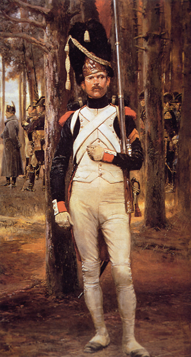
(아무리 나폴레옹의 척탄 근위대라고 해도, 머스켓을 든 일개 병사가 장교의 상징인 검을 차고 있네요 ? 어찌된 일일까요 ?)
그런 점 때문이었을까요 ? 검은 약탈 대상으로서 뿐만 아니라, 병사들의 보조 무장으로서도 인기 만점이었습니다. 사실 머스켓 소총으로 무장한 병사들의 보조 무장은 당연히 총검이였으므로, 병사들이 검을 패용하고 다닌다고 해도 괜한 장비 무게만 더 늘어날 뿐 전투력에는 별로 도움이 되지 않았습니다. 그럼에도 불구하고 검은 일종의 신분의 상징으로 통했습니다. 영국군 일반 보병들에게는 검이 지급되지 않았지만, 프랑스군은 엘리트 부대인 척탄병 중대에게는 짧은 검(short saber)을 지급했습니다. 하지만 병사들 사이의 경쟁심으로 인해, 실질적으로는 유격병(voltigeur) 부대와 엽병(chasseur) 부대에게도 이런 검이 지급되어야 했습니다. 이런 검은 특히 사열을 할 때나 주둔지 근처 마을에서 어슬렁거릴 때는 으스대기 위해서 꼭 패용을 했습니다. 하지만 앞서 말했듯이, 실제 전투에는 별 도움이 되지 않았기 때문에, 정작 전투를 하기 위해 나갈 때는 이 짧은 검은 주둔지에 남겨 두고 갔다고 합니다. 이런 비효율성 때문에, 나폴레옹은 1807년에 유격병이나 엽병들은 검을 휴대하지 말라는 훈령을 내렸습니다. 그러나 아무도 이 명령을 귀담아 듣지 않았기 때문에, 1815년 워털루 전투를 앞두고 다시 한번 이 명령을 내려야 했다고 합니다. 하지만 이때도 그 명령이 제대로 지켜졌는지는 의문입니다.